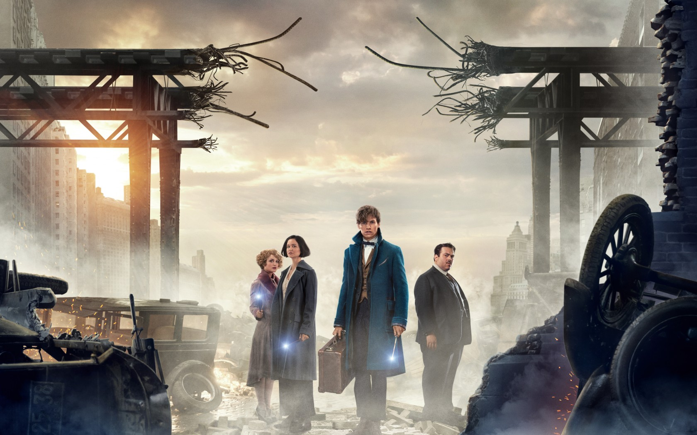

Animales Fantasticos90% de coincidencia 2 h 49 minEn 1926, el mago experto en zoología Newt Scamander hace una breve parada en Nueva York mientras viaja catalogando y capturando criaturas mágicas por el mundo. Jacob, un humano corriente, provoca por error que las criaturas.REPRODUCIRTRAILERProtagonistas: Johnny Deep, Ezra Miller, Eddie Redmay. Genero: Fantasia.
 REPRODUCIR
TRAILER
REPRODUCIR
TRAILER